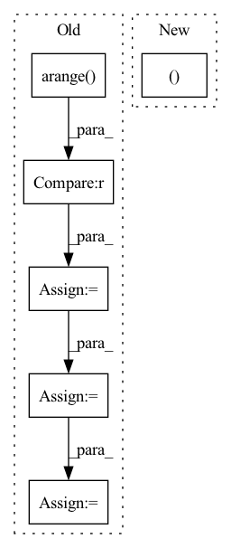

Pattern ID :273
Before Change
if self.use_mask:
lens = lens.to(dtype=torch.long)
max_len = x.size(2)
mask = torch.arange(max_len).to(lens.device).expand(
len(lens), max_len
) >= lens.unsqueeze(1)
x = x.masked_fill(mask.unsqueeze(1).to(device=x.device), 0)
// del mask
lens = self.get_seq_len(lens)
sh = x.shape
if self.heads != -1:
x = x.view(-1, self.heads, sh[-1])
out = self.conv(x)
if self.heads != -1:
out = out.view(sh[0], self.real_out_channels, -1)
return out, lens
After Change
if self.use_mask:
x = self.mask_fill(x, lens)
out = self.conv(x)
return out, self.get_seq_len(lens)
def GroupShuffle(groups: int, channels: int) -> nn.Module:
Group shuffle operator from shufflenet.In pattern: SUPERPATTERN
Frequency: 3
Non-data size: 6
Instances Fragment ID: 920270
Project Name: scart97/thunder-speech
Commit Name: 1eb7dfb6a8a7b1e3d30aaebb26a0f0ca0390e542
Time: 2021-01-30
Author: scart.lucas@gmail.com
File Name: src/thunder/jasper/blocks.py
M Class Name: MaskedConv1d
N Class Name: MaskedConv1d
M Method Name: forward(3)
N Method Name: forward(3)
M Parent Class: nn.Module
N Parent Class: nn.Module
M File Name: src/thunder/jasper/blocks.py
N File Name: src/thunder/jasper/blocks.py
M Start Line: 165
M End Line: 185
N Start Line: 225
N End Line: 239
Before Change
input = torch.clamp(input, -1+eps, 1-eps)
theta = torch.arccos(input) // (batch_size, num_classes)
theta_modified = theta + margin // (batch_size, num_classes)
mesh = torch.arange( 0, num_classes) .unsqueeze(dim=0) // (1, num_classes)
mesh_target = target.unsqueeze(dim=1) // (batch_size, 1)
condition = mesh==mesh_target // (batch_size, num_classes)
theta_modified = torch.where(condition, theta_modified, theta)
cos = scale * torch.cos(theta_modified) // (batch_size, num_classes)
indices = num_classes * torch.arange(batch_size) + target // (batch_size,)
cos_target = torch.take(cos, indices) // (batch_size,)
loss = - cos_target + torch.logsumexp(cos, dim=1)
if batch_mean:
loss = loss.mean(dim=0)After Change
num_classes = input.size(-1)
scale, margin = self.scale, self.margin
cos_m, sin_m = self.cos_m, self.sin_m
eps = self.eps
cos_th = input Fragment ID: 920268
Project Name: tky823/dnn-based_source_separation
Commit Name: a4bde6a5794ce4ec526ff846e07a4de4de24ab04
Time: 2022-02-10
Author: delta9guitar97@gmail.com
File Name: src/criterion/metric_learn.py
M Class Name: AdditiveAngularMarginLoss
N Class Name: AdditiveAngularMarginLoss
M Method Name: forward(4)
N Method Name: forward(4)
M Parent Class: nn.Module
N Parent Class: nn.Module
M File Name: src/criterion/metric_learn.py
N File Name: src/criterion/metric_learn.py
M Start Line: 168
M End Line: 184
N Start Line: 181
N End Line: 199
Before Change
def forward(self, audio, audio_len):
if random.random() < 0.2:
audio_mask = (torch.arange(audio.shape[1], device=audio.device)[None, :, None] < audio_len[:, None, None]) .float()
x = torch.exp(audio - 1e-6) * audio_mask
y = torch.cat([x[1:], x[:1]])
return torch.log(0.9 * x + 0.1 * y + 1e-6) * audio_mask, audio_len
return audio, audio_len
After Change
assert len(audio.shape) == 3
if self.do_timestretch and random.random() < AUGUMENT_RATE:
audio, audio_len = self.timestretch(audio, audio_len)
if random.random() < AUGUMENT_RATE:
audio = self.pitchshift(audio)
if random.random() < AUGUMENT_RATE: Fragment ID: 920262
Project Name: kaiidams/voice100
Commit Name: dfe0234fcc858357cb2a91bcba1da06792eabab7
Time: 2021-06-25
Author: katsuya.iida@gmail.com
File Name: voice100/audio.py
M Class Name: BatchSpectrogramAugumentation
N Class Name: BatchSpectrogramAugumentation
M Method Name: forward(3)
N Method Name: forward(3)
M Parent Class: nn.Module
N Parent Class: nn.Module
M File Name: voice100/audio.py
N File Name: voice100/audio.py
M Start Line: 73
M End Line: 78
N Start Line: 80
N End Line: 95